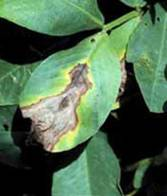

| Home |
| SESAMUM |
MAJOR DISEASES |
| 1. Root rot or stem rot or charcoal rot |
| 2. Leaf Blight |
| 3. Leaf spot |
| 4. Wilt |
| 5. Stem blight |
| 6. Powdery mildew |
| 7. Bacterial leaf spot |
| 8. Phyllody |
MINOR DISEASES |
| 1. Anthracnose |
| Questions |
| Download Notes |
SESAMUM :: MAJOR DISEASE :: ANTHRACNOSE
Anthracnose - Colletotrichum sp.
Dark brown lesions on leaf stem and capsules with black acervuli in the central portion.
|  |